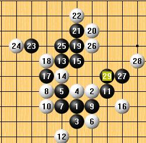
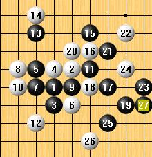
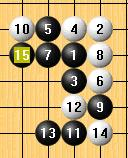
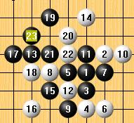
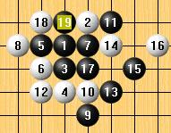
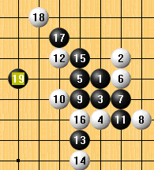
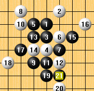
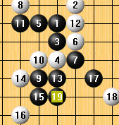

[学术讨论]五珠定石之银月
首页
茗弈阁
#1 [学术讨论]五珠定石之银月 作者：妙玉偷星 发表时间：2008-7-1 18:40:40
今天和大家一起打银月谱，希望其中的一些东西能对大家有所帮助， 银月和花蒲一样是容易入门的



［ 茗弈小刀 于 2008-9-17 15:05:48 时奖励此帖[金币加 20 威望加1］
［此帖子已被 茗弈小刀 在 2009-4-22 20:40:48 编辑过］
#2 Re:五珠定石之银月 作者：妙玉偷星 发表时间：2008-7-1 18:49:58

#3 Re:五珠定石之银月 作者：茗弈小刀 发表时间：2008-7-1 20:59:28
哇！强悍！星仔有心了。代大家谢谢你。继续努力哟！！！！
#4 Re:五珠定石之银月 作者：逆刃 发表时间：2008-7-1 21:06:40
我以前根据五珠定石做了个银月的一打精简谱。 ShowPost.asp?ThreadID=1974
ShowPost.asp?ThreadID=1974
#5 Re:五珠定石之银月 作者：五子痴 发表时间：2008-7-2 16:58:44
可以试着对自己的棋评注下，印象更深刻！
#6 Re:五珠定石之银月 作者：啊丫呀 发表时间：2008-8-7 20:12:06
 学习了,但愿能有所进步!
学习了,但愿能有所进步!